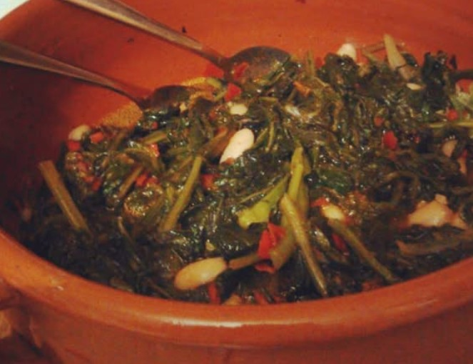

Cos'è il Cacigno?
Il Cacigno (nome scientifico Sonchus oleraceus), comunemente noto come Crespigno o Grespino, è una pianta erbacea spontanea appartenente alla famiglia delle Asteraceae. È una delle erbe "alimurgiche" più diffuse in Italia, utilizzata fin dall'antichità per le sue proprietà nutritive e il suo sapore delicato.

Immagine: La tipica rosetta e il fiore giallo del Sonchus oleraceus.
Come Riconoscerlo
Riconoscere il cacigno è fondamentale per chi ama la raccolta spontanea. Ecco le sue caratteristiche principali:
- Foglie: Hanno margini dentellati ma non pungenti (a differenza del Sonchus asper). Se spezzate, rilasciano un tipico "latte" bianco.
- Fusto: Cavo all'interno, spesso con sfumature violacee alla base.
- Fiori: Di colore giallo intenso, simili a piccoli denti di leone (tarassaco).
- Habitat: Cresce ovunque: negli orti, lungo i sentieri e nei campi incolti.
Proprietà e Benefici
Non è solo buono, ma fa anche bene! Il cacigno è ricco di nutrienti essenziali:
- Depurativo: Aiuta il fegato e i reni grazie alle sue proprietà diuretiche.
- Vitamine: Ottima fonte di Vitamina C e sali minerali come ferro e calcio.
- Antiossidante: Contiene polifenoli che contrastano l'invecchiamento cellulare.
Il Cacigno in Cucina
In Abruzzo e in molte zone del Centro-Sud, il "cascigno" è protagonista di ricette storiche. Il suo sapore è dolciastro con un retrogusto leggermente amarognolo.

Ricette classiche:
- Lessato e Ripassato: Si bolle brevemente e si ripassa in padella con aglio, olio e peperoncino. Spesso accompagnato da fagioli o pancetta.
- Crudo in Misticanza: Le foglie più tenere possono essere mangiate fresche in insalata.
- Zuppe: Ottimo ingrediente per la "Minestra Maritata" o zuppe di legumi.
Attenzione alla Raccolta
Se decidi di raccogliere il cacigno per il tuo sito o per mangiarlo, ricorda sempre queste regole:
1. Raccogli lontano da strade trafficate o zone industriali.
2. Non estirpare la radice se non necessario, per permettere alla pianta di ricrescere.
3. Se hai dubbi sull'identificazione, consulta sempre un esperto botanico.